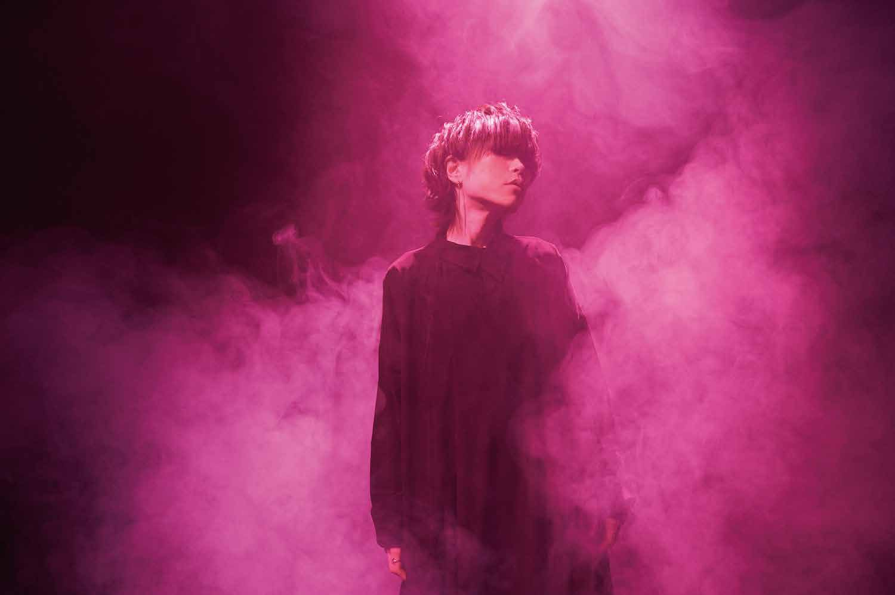

Exclusive interview
NANO ナノ
Singing like she's screaming her emotions
Raised between two cultures and languages, the Japanese bilingual singer talks about rock, anime, identity, and why she keeps writing for the one person who needs the song.
Read the interview · p. 2